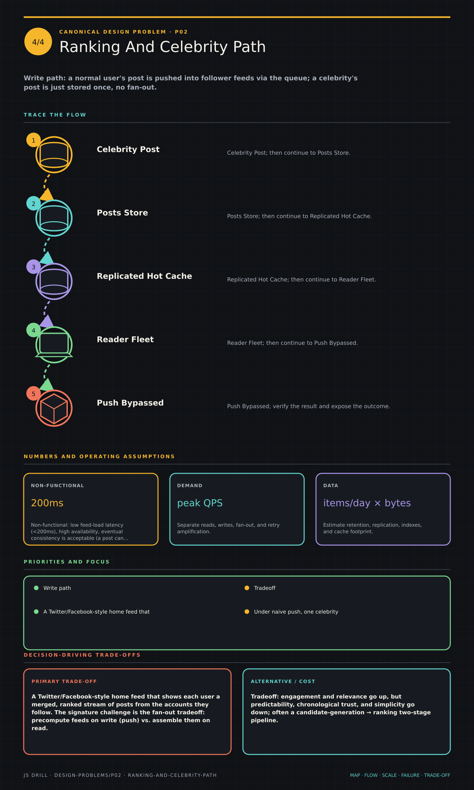

https://frosty110.github.io/js-drill/assets/system-design/infographics/design-problems/p02/ranking-and-celebrity-path.pngWrite path: a normal user's post is pushed into follower feeds via the queue; a celebrity's post is just stored once, no fan-out.
A Twitter/Facebook-style home feed that shows each user a merged, ranked stream of posts from the accounts they follow. The signature challenge is the fan-out tradeoff: precompute feeds on write (push) vs. assemble them on read (pull), and the hybrid needed to survive high-follower 'celebrity' accounts.
All questions, model answers and diagrams for Design a News Feed →